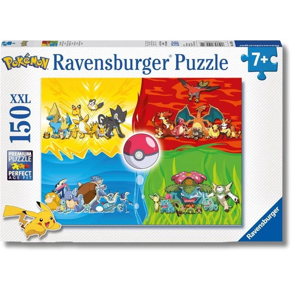

👶 7 años
Ravensburger Pokémon Puzzle XXL
Un puzzle de 150 piezas XXL con personajes Pokémon, pensado para esta edad. Incluye póster de referencia y tecnología Soft-Click para que cada pieza encaje con precisión.
⭐
¿Por qué nos gusta?
- ✔150 piezas de tamaño XXL, fáciles de manejar.
- ✔Tecnología Soft-Click para un encaje perfecto.
- ✔Temática Pokémon muy popular en esta edad.
💬
Lo que más destacan las familias
Quienes lo han comprado destacan la calidad de las piezas, con un encaje que hace que armar el puzzle resulte muy satisfactorio. Los fans de Pokémon disfrutan especialmente el resultado final.